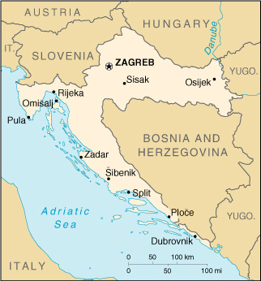

|
Croatia | |
| Introduction Geography People Government Economy Communications Transportation Military Transnational Issues | ||
|  | ||
| Croatia | Introduction | Top of Page |
| Background: | In 1918, the Croats, Serbs, and Slovenes formed a kingdom known after 1929 as Yugoslavia. Following World War II, Yugoslavia became an independent communist state under the strong hand of Marshal TITO. Although Croatia declared its independence from Yugoslavia in 1991, it took four years of sporadic, but often bitter, fighting before occupying Serb armies were mostly cleared from Croatian lands. Under UN supervision the last Serb-held enclave in eastern Slavonia was returned to Croatia in 1998. |
| Croatia | Geography | Top of Page |
| Location: | Southeastern Europe, bordering the Adriatic Sea, between Bosnia and Herzegovina and Slovenia |
| Geographic coordinates: | 45 10 N, 15 30 E |
| Map references: | Europe |
| Area: |
total:
56,542 sq km
land: 56,414 sq km water: 128 sq km |
| Area - comparative: | slightly smaller than West Virginia |
| Land boundaries: |
total:
2,028 km
border countries: Bosnia and Herzegovina 932 km, Hungary 329 km, Yugoslavia 266 km, Slovenia 501 km |
| Coastline: | 5,835 km (mainland 1,777 km, islands 4,058 km) |
| Maritime claims: |
continental shelf:
200-m depth or to the depth of exploitation
territorial sea: 12 NM |
| Climate: | Mediterranean and continental; continental climate predominant with hot summers and cold winters; mild winters, dry summers along coast |
| Terrain: | geographically diverse; flat plains along Hungarian border, low mountains and highlands near Adriatic coastline and islands |
| Elevation extremes: |
lowest point:
Adriatic Sea 0 m
highest point: Dinara 1,830 m |
| Natural resources: | oil, some coal, bauxite, low-grade iron ore, calcium, natural asphalt, silica, mica, clays, salt, hydropower |
| Land use: |
arable land:
21%
permanent crops: 2% permanent pastures: 20% forests and woodland: 38% other: 19% (1993 est.) |
| Irrigated land: | 30 sq km (1993 est.) |
| Natural hazards: | destructive earthquakes |
| Environment - current issues: | air pollution (from metallurgical plants) and resulting acid rain is damaging the forests; coastal pollution from industrial and domestic waste; landmine removal and reconstruction of infrastructure consequent to 1992-95 civil strife |
| Environment - international agreements: |
party to:
Air Pollution, Air Pollution-Sulphur 94, Biodiversity, Climate Change, Desertification, Endangered Species, Hazardous Wastes, Law of the Sea, Marine Dumping, Nuclear Test Ban, Ozone Layer Protection, Ship Pollution, Wetlands
signed, but not ratified: Air Pollution-Persistent Organic Pollutants, Climate Change-Kyoto Protocol |
| Geography - note: | controls most land routes from Western Europe to Aegean Sea and Turkish Straits |
| Croatia | People | Top of Page |
| Population: | 4,334,142 (July 2001 est.) |
| Age structure: |
0-14 years:
18.16% (male 403,722; female 383,151)
15-64 years: 66.61% (male 1,452,872; female 1,434,086) 65 years and over: 15.23% (male 245,727; female 414,584) (2001 est.) |
| Population growth rate: | 1.48% (2001 est.) |
| Birth rate: | 12.82 births/1,000 population (2001 est.) |
| Death rate: | 11.41 deaths/1,000 population (2001 est.) |
| Net migration rate: | 13.37 migrant(s)/1,000 population (2001 est.) |
| Sex ratio: |
at birth:
1.06 male(s)/female
under 15 years: 1.05 male(s)/female 15-64 years: 1.01 male(s)/female 65 years and over: 0.59 male(s)/female total population: 0.94 male(s)/female (2001 est.) |
| Infant mortality rate: | 7.21 deaths/1,000 live births (2001 est.) |
| Life expectancy at birth: |
total population:
73.9 years
male: 70.28 years female: 77.73 years (2001 est.) |
| Total fertility rate: | 1.94 children born/woman (2001 est.) |
| HIV/AIDS - adult prevalence rate: | 0.02% (1999 est.) |
| HIV/AIDS - people living with HIV/AIDS: | 350 (1999 est.) |
| HIV/AIDS - deaths: | less than 100 (1999 est.) |
| Nationality: |
noun:
Croat(s)
adjective: Croatian |
| Ethnic groups: | Croat 78.1%, Serb 12.2%, Bosniak 0.9%, Hungarian 0.5%, Slovenian 0.5%, Czech 0.4%, Albanian 0.3%, Montenegrin 0.3%, Roma 0.2%, others 6.6% (1991) |
| Religions: | Roman Catholic 76.5%, Orthodox 11.1%, Muslim 1.2%, Protestant 0.4%, others and unknown 10.8% (1991) |
| Languages: | Croatian 96%, other 4% (including Italian, Hungarian, Czech, Slovak, and German) |
| Literacy: |
definition:
age 15 and over can read and write
total population: 97% male: 99% female: 95% (1991 est.) |
| Croatia | Government | Top of Page |
| Country name: |
conventional long form:
Republic of Croatia
conventional short form: Croatia local long form: Republika Hrvatska local short form: Hrvatska |
| Government type: | presidential/parliamentary democracy |
| Capital: | Zagreb |
| Administrative divisions: | 20 counties (zupanije, zupanija - singular), 1 city (grad -singular)*: Bjelovarsko-Bilogorska Zupanija, Brodsko-Posavska Zupanija, Dubrovacko-Neretvanska Zupanija, Istarska Zupanija, Karlovacka Zupanija, Koprivnicko-Krizevacka Zupanija, Krapinsko-Zagorska Zupanija, Licko-Senjska Zupanija, Medimurska Zupanija, Osjecko-Baranjska Zupanija, Pozesko-Slavonska Zupanija, Primorsko-Goranska Zupanija, Sibensko-Kninska Zupanija, Sisacko-Moslavacka Zupanija, Splitsko-Dalmatinska Zupanija, Varazdinska Zupanija, Viroviticko-Podravska Zupanija, Vukovarsko-Srijemska Zupanija, Zadarska Zupanija, Zagreb*, Zagrebacka Zupanija |
| Independence: | 25 June 1991 (from Yugoslavia) |
| National holiday: | Republic Day/Statehood Day, 30 May (1990) |
| Constitution: | adopted on 22 December 1990 |
| Legal system: | based on civil law system |
| Suffrage: | 18 years of age; universal (16 years of age, if employed) |
| Executive branch: |
chief of state:
President Stjepan (Stipe) MESIC (since 18 February 2000)
head of government: Prime Minister Ivica RACAN (since 27 January 2000); Deputy Prime Ministers Goran GRANIC (since 27 January 2000), Zeljka ANTUNOVIC (since 27 January 2000), Slavko LINIC (since 27 January 2000) cabinet: Council of Ministers named by the prime minister and approved by the House of Representatives elections: president elected by popular vote for a five-year term; election last held 7 February 2000 (next to be held NA 2005); prime minister nominated by the president in line with the balance of power in the Assembly election results: Stjepan MESIC elected president; percent of vote - Stjepan MESIC (HNS) 56%, Drazen BUDISA (HSLS) 44% note: government coalition - SDP, HSLS, HSS, LP, HNS, IDS |
| Legislative branch: |
bicameral Assembly or Sabor consists of the House of Counties or Zupanijski Dom (68 seats, 63 directly elected by popular vote, 5 appointed by the president; members serve four-year terms; note - House of Counties to be abolished in 2001) and House of Representatives or the Zastupnicki Dom (151 seats; members elected by popular vote to serve four-year terms)
elections: House of Counties - last held 13 April 1997; House of Representatives - last held 2-3 January 2000 (next to be held NA 2004) election results: House of Counties - percent of vote by party - NA%; seats by party - HDZ 42, HSLS/HSS 11, HSS 2, IDS 2, SDP/PGS/HNS 2, SDP/HNS 2, HSLS/HSS/HNS 1, HSLS 1; note - in some districts certain parties ran as coalitions, while in others they ran alone; House of Representatives - percent of vote by party - NA%; seats by party - HDZ 46, SDP 44, HSLS 24, HSS 17, HSP/HKDU 5, IDS 4, HNS 2, independents 4, minority representatives 5 |
| Judicial branch: | Supreme Court; Constitutional Court; judges for both courts appointed for eight-year terms by the Judicial Council of the Republic, which is elected by the House of Representatives |
| Political parties and leaders: |
Alliance of Croatian Coast and Mountains Department or PGS [Luciano SUSANJ]; Croatian Christian Democratic Union or HKDU [Marko VESELICA]; Croatian Democratic Union or HDZ [Ivo SANADER]; Croatian Party of Rights or HSP [Dobroslav PARAGA]; Croatian Peasant Party or HSS [Zlatko TOMCIC]; Croatian People's Party or HNS [Vesna PUSIC]; Croatian Social Liberal Party or HSLS [Drazen BUDISA]; Independent Democratic Serb Party or SDSS [Vojislav STANIMIROVIC]; Istrian Democratic Assembly or IDS [Ivan JAKOVCIC]; Liberal Party or LP [leader NA]; Social Democratic Party of Croatia or SDP [Ivica RACAN]
note: the Social Democratic Party or SDP and the Croatian Social Liberal Party or HSLS formed a coalition as did the HSS, HNS, LP, and IDS, which together defeated the Croatian Democratic Union or HDZ in the 2000 lower house parliamentary election |
| Political pressure groups and leaders: | NA |
| International organization participation: | BIS, CCC, CE, CEI, EAPC, EBRD, ECE, FAO, IADB, IAEA, IBRD, ICAO, ICFTU, ICRM, IDA, IFAD, IFC, IFRCS, IHO, ILO, IMF, IMO, Inmarsat, Intelsat, Interpol, IOC, IOM, ISO, ITU, NAM (observer), OAS (observer), OPCW, OSCE, PCA, PFP, UN, UNCTAD, UNESCO, UNIDO, UPU, WHO, WIPO, WMO, WToO, WTrO |
| Diplomatic representation in the US: |
chief of mission:
Ambassador Ivan GRDESIC
chancery: 2343 Massachusetts Avenue NW, Washington, DC 20008 telephone: [1] (202) 588-5899 FAX: [1] (202) 588-8936 consulate(s) general: Chicago, Cleveland, Los Angeles, New York |
| Diplomatic representation from the US: |
chief of mission:
Ambassador Lawrence G. ROSSIN
embassy: Andrije Hebranga 2, 100000 Zagreb mailing address: use street address telephone: [385] (1) 455-55-00 FAX: [385] (1) 455-85-85 |
| Flag description: | red, white, and blue horizontal bands with Croatian coat of arms (red and white checkered) |
| Croatia | Economy | Top of Page |
| Economy - overview: | Before the dissolution of Yugoslavia, the Republic of Croatia, after Slovenia, was the most prosperous and industrialized area, with a per capita output perhaps one-third above the Yugoslav average. Croatia faces considerable economic problems stemming from: the legacy of longtime communist mismanagement of the economy; damage during the internecine fighting to bridges, factories, power lines, buildings, and houses; the large refugee and displaced population, both Croatian and Bosnian; and the disruption of economic ties. Stepped-up Western aid and investment, especially in the tourist and oil industries, would help bolster the economy. The economy emerged from its mild recession in 2000 with tourism the main factor. Massive unemployment remains a key negative element. The government's failure to press the economic reforms needed to spur growth is largely the result of coalition politics and public resistance, particularly from the trade unions, to measures that would cut jobs, wages, or social benefits. |
| GDP: | purchasing power parity - $24.9 billion (2000 est.) |
| GDP - real growth rate: | 3.2% (2000 est.) |
| GDP - per capita: | purchasing power parity - $5,800 (2000 est.) |
| GDP - composition by sector: |
agriculture:
10%
industry: 19% services: 71% (1999 est.) |
| Population below poverty line: | 4% (1999 est.) |
| Household income or consumption by percentage share: |
lowest 10%:
NA%
highest 10%: NA% |
| Inflation rate (consumer prices): | 6% (2000 est.) |
| Labor force: | 1.68 million (October 2000) |
| Labor force - by occupation: | agriculture NA%, industry NA%, services NA% |
| Unemployment rate: | 22% (October 2000) |
| Budget: |
revenues:
$6 billion
expenditures: $4.7 billion, including capital expenditures of $NA (1999 est.) |
| Industries: | chemicals and plastics, machine tools, fabricated metal, electronics, pig iron and rolled steel products, aluminum, paper, wood products, construction materials, textiles, shipbuilding, petroleum and petroleum refining, food and beverages; tourism |
| Industrial production growth rate: | 1.7% (2000) |
| Electricity - production: | 10.96 billion kWh (1999) |
| Electricity - production by source: |
fossil fuel:
40.89%
hydro: 59% nuclear: 0% other: 0.11% (1999) |
| Electricity - consumption: | 13.643 billion kWh (1999) |
| Electricity - exports: | 1 billion kWh (1999) |
| Electricity - imports: | 4.45 billion kWh (1999) |
| Agriculture - products: | wheat, corn, sugar beets, sunflower seed, alfalfa, clover, olives, citrus, grapes, soy beans, potatoes; livestock, dairy products |
| Exports: | $4.3 billion (f.o.b., 1999) |
| Exports - commodities: | transport equipment, textiles, chemicals, foodstuffs, fuels |
| Exports - partners: | Italy 18%, Germany 15.7%, Bosnia and Herzegovina 12.8%, Slovenia 10.6%, Austria 6.2% (1999) |
| Imports: | $7.8 billion (c.i.f., 1999) |
| Imports - commodities: | machinery, transport and electrical equipment, chemicals, fuels and lubricants, foodstuffs |
| Imports - partners: | Germany 18.5%, Italy 15.9%, Russia 8.6%, Slovenia 7.9%, Austria 7.1% (1999) |
| Debt - external: | $9.9 billion (December 1999) |
| Economic aid - recipient: | $NA |
| Currency: | kuna (HRK) |
| Currency code: | HRK |
| Exchange rates: | kuna per US dollar - 8.089 (January 2001), 8.277 (2000), 7.112 (1999), 6.362 (1998), 6.101 (1997), 5.434 (1996) |
| Fiscal year: | calendar year |
| Croatia | Communications | Top of Page |
| Telephones - main lines in use: | 1.488 million (1997) |
| Telephones - mobile cellular: | 187,000 (yearend 1998) |
| Telephone system: |
general assessment:
NA
domestic: reconstruction plan calls for replacement of all analog circuits with digital and enlarging the network; a backup will be included in the plan for the main trunk international: digital international service is provided through the main switch in Zagreb; Croatia participates in the Trans-Asia-Europe (TEL) fiber-optic project which consists of two fiber-optic trunk connections with Slovenia and a fiber-optic trunk line from Rijeka to Split and Dubrovnik; Croatia is also investing in ADRIA 1, a joint fiber-optic project with Germany, Albania, and Greece (2000) |
| Radio broadcast stations: | AM 16, FM 98, shortwave 5 (1999) |
| Radios: | 1.51 million (1997) |
| Television broadcast stations: | 36 (plus 321 repeaters) (September 1995) |
| Televisions: | 1.22 million (1997) |
| Internet country code: | .hr |
| Internet Service Providers (ISPs): | 9 (2000) |
| Internet users: | 100,000 (1999) |
| Croatia | Transportation | Top of Page |
| Railways: |
total:
2,296 km
standard gauge: 2,296 km 1.435-m gauge (983 km electrified) (2000) |
| Highways: |
total:
27,840 km
paved: 23,497 km (including 330 km of expressways) unpaved: 4,343 km (1998) |
| Waterways: |
785 km
note: (perennially navigable; large sections of Sava blocked by downed bridges, silt, and debris) |
| Pipelines: | crude oil 670 km; petroleum products 20 km; natural gas 310 km (1992) |
| Ports and harbors: | Dubrovnik, Dugi Rat, Omisalj, Ploce, Pula, Rijeka, Sibenik, Split, Vukovar (inland waterway port on Danube), Zadar |
| Merchant marine: |
total:
53 ships (1,000 GRT or over) totaling 631,853 GRT/969,739 DWT
ships by type: bulk 11, cargo 18, chemical tanker 1, combination bulk 5, container 3, multi-functional large-load carrier 3, passenger 1, petroleum tanker 2, refrigerated cargo 2, roll on/roll off 4, short-sea passenger 3 (2000 est.) |
| Airports: | 67 (2000 est.) |
| Airports - with paved runways: |
total:
22
over 3,047 m: 2 2,438 to 3,047 m: 6 1,524 to 2,437 m: 2 914 to 1,523 m: 4 under 914 m: 8 (2000 est.) |
| Airports - with unpaved runways: |
total:
45
1,524 to 2,437 m: 1 914 to 1,523 m: 8 under 914 m: 36 (2000 est.) |
| Heliports: | 1 (2000 est.) |
| Croatia | Military | Top of Page |
| Military branches: | Ground Forces, Naval Forces, Air and Air Defense Forces |
| Military manpower - military age: | 19 years of age |
| Military manpower - availability: | males age 15-49: 1,085,877 (2001 est.) |
| Military manpower - fit for military service: | males age 15-49: 859,621 (2001 est.) |
| Military manpower - reaching military age annually: | males: 30,037 (2001 est.) |
| Military expenditures - dollar figure: | $575 million (2000) |
| Military expenditures - percent of GDP: | 3.8% (2000) |
| Croatia | Transnational Issues | Top of Page |
| Disputes - international: | Croatia and Italy made progress toward resolving a bilateral issue dating from World War II over property and ethnic minority rights; progress with Slovenia on discussions of adjustments to land boundary, but problems remain in defining maritime boundary in Gulf of Piran; Croatia and Yugoslavia are negotiating the status of the strategically important Prevlaka Peninsula, which is currently under a UN military observer mission (UNMOP) |
| Illicit drugs: | transit point along the Balkan route for Southwest Asian heroin to Western Europe; a minor transit point for maritime shipments of South American cocaine bound for Western Europe |
{kind=link}
{kind=link}